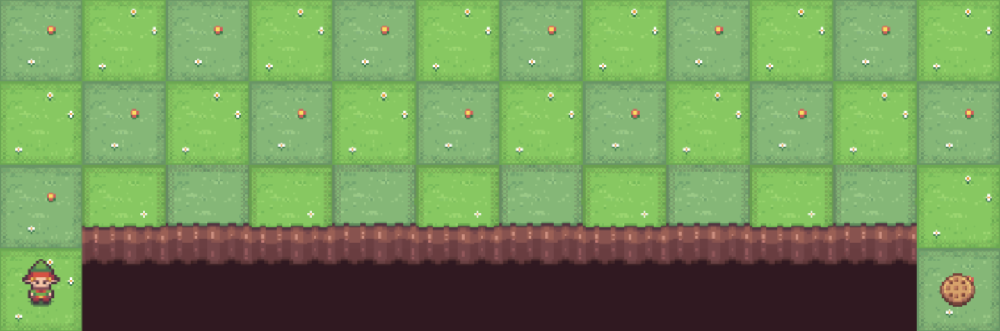

Projects
Featured Data Science Projects
NYC Subway Crowding & Delay Analysis
Conducted a large-scale analysis of NYC subway ridership and real-time transit data to investigate crowding and service reliability across the subway system. Using MTA ridership, GTFS schedule data, and real-time trip feeds, I developed a crowding index and delay estimation pipeline to identify congestion patterns, recurring bottlenecks, and relationships between demand and delays.
San Diego Airbnb Price Analysis
Analyzed Airbnb listings in San Diego to identify the factors that most strongly influence pricing. Using Python for preprocessing and exploratory analysis and Tableau for visualization, I examined how variables such as room type, property type, location, and listing size affect listing prices.
Steam Game Review Sentiment Analysis
Investigated linguistic characteristics of Steam game reviews through sentiment analysis, readability analysis, and machine learning classification to identify patterns in review structure, vocabulary complexity, and sentiment expression.
Machine Learning Projects
Stock Price Prediction Model
Implemented a machine learning pipeline to forecast stock closing prices using historical market data.

Phishing Email Detection
Built a phishing email classifier using machine learning and NLP techniques to detect malicious emails.
Other Projects
NYC Subway Route Optimization Using Dijkstra's Algorithm
Developed a graph-based Python application implementing Dijkstra's shortest path algorithm on the New York City subway network.

Reinforcement Learning Algorithms for CliffWalking Environment
Implemented reinforcement learning algorithms in the OpenAI Gym CliffWalking environment to compare model-free and dynamic programming approaches.

Game-Theoretic Phishing Attack Simulation
Developed a repeated-game cybersecurity simulation in Python modeling interactions between phishing attackers and defenders